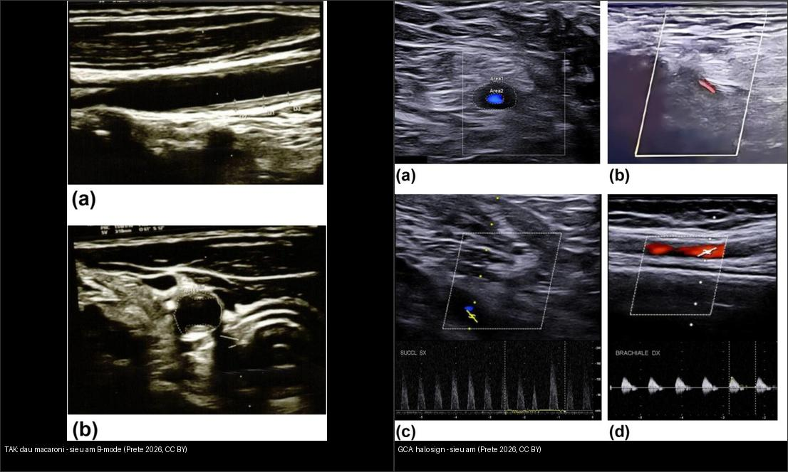
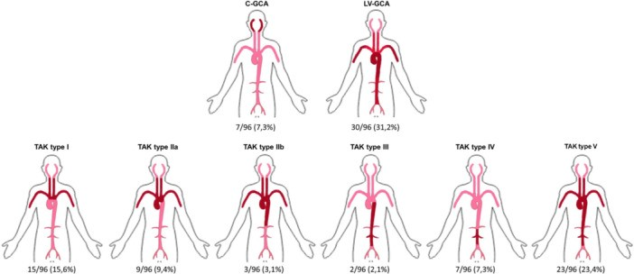
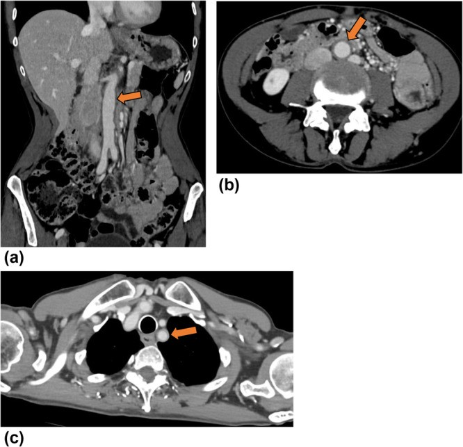
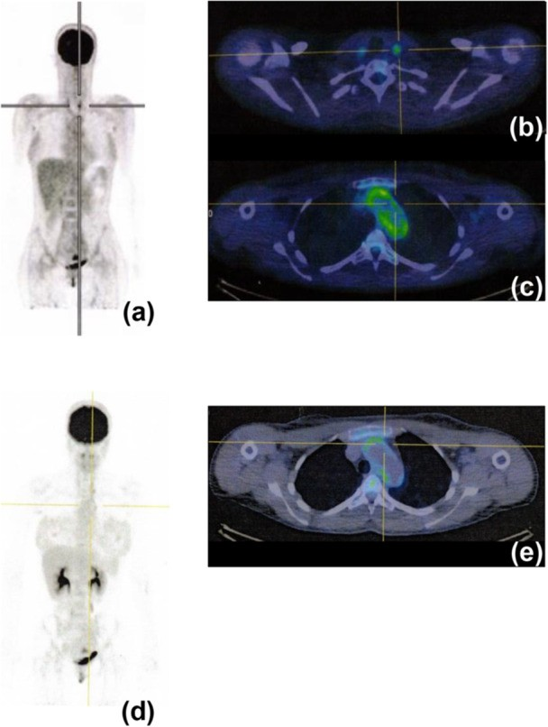
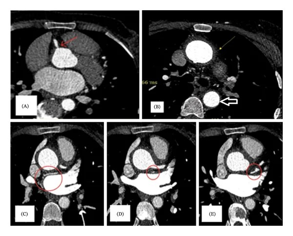
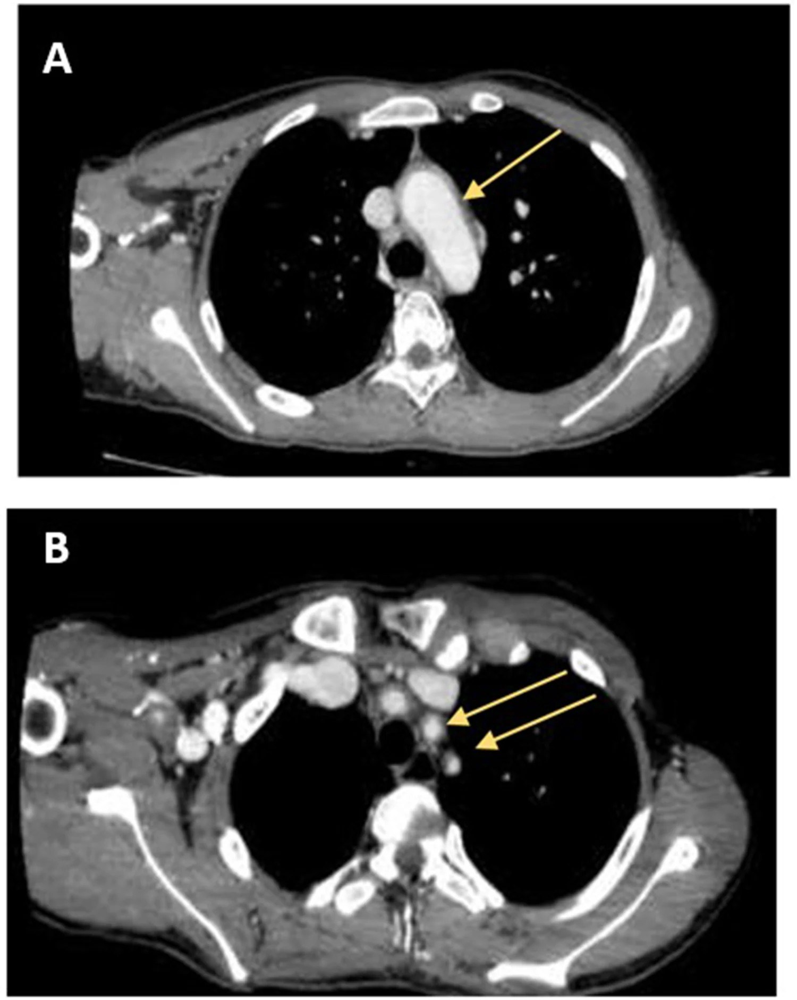
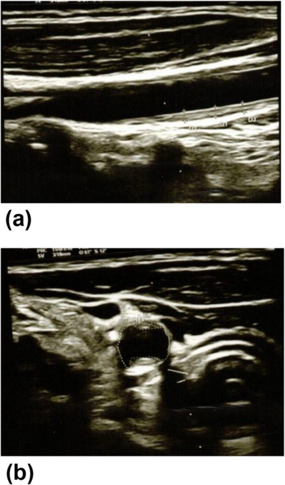
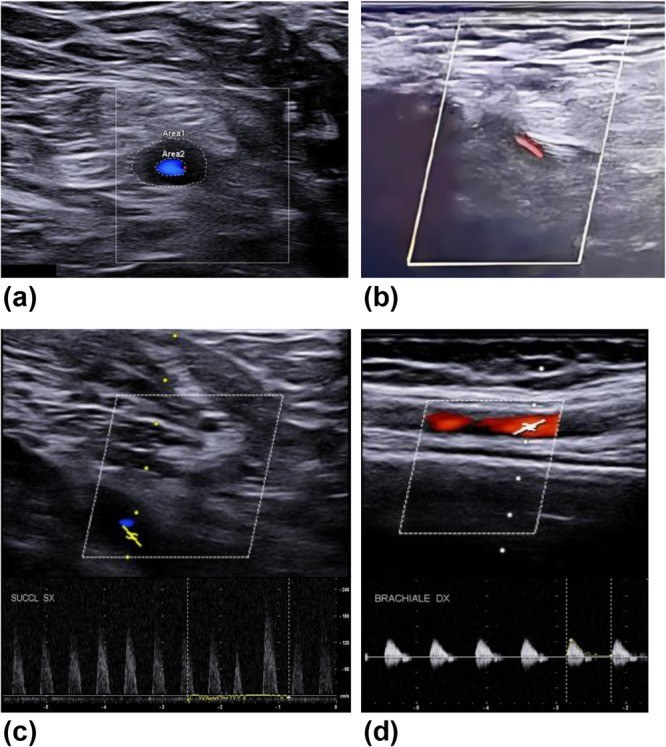
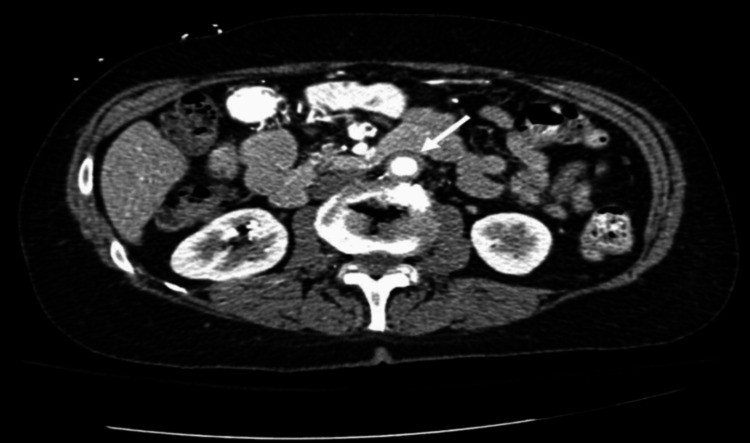

436 — Takayasu & viêm động mạch tế bào khổng lồ (viêm mạch lớn): phân biệt bằng tuổi + hình ảnh thành mạch / Takayasu arteritis vs giant cell arteritis (large-vessel vasculitis)
Tags: pattern:day-thanh-mach vung:thanh-mach-lon score:ACR-EULAR-2022 score:Numano protocol:CTA-MRA protocol:FDG-PET-CT
Mức chắc chắn (certainty): tổng hợp y văn (literature synthesis) — nhóm tự biên từ y văn mở (Immun Inflamm Dis 2026 CC BY 4.0 + Cureus 2026 CC BY 4.0 + Case Rep Med 2026 CC BY 4.0 + Int Med Case Rep J 2026 CC BY-NC 4.0) và tiêu chuẩn phân loại 2022 ACR/EULAR, chưa gắn một ca nguyên văn đơn lẻ xuyên suốt.
1. Tổng quan — vì sao "tuổi" là chìa khóa, và thành mạch dày nghĩa là gì
- Viêm mạch lớn (large-vessel vasculitis, LVV) là nhóm viêm mạch tự miễn ảnh hưởng động mạch chủ và các nhánh chính. Ở người lớn, đây là nhóm viêm mạch nguyên phát hay gặp nhất, gồm 2 thực thể chính: viêm động mạch Takayasu (Takayasu arteritis, TAK) và viêm động mạch tế bào khổng lồ (giant cell arteritis, GCA). Có ý kiến còn tranh luận liệu đây là 2 bệnh khác biệt hay 2 đầu của một phổ; điểm phân biệt thực hành mạnh nhất là TUỔI.
- TAK = bệnh của người trẻ (kinh điển < 40 tuổi, thường khởi phát 20–30 tuổi, nữ nhiều hơn), tổn thương hẹp/tắc dài đoạn của ĐMC và các nhánh, hay gặp ở Đông Á/Ấn Độ/Nam Mỹ — xưa gọi "bệnh không mạch (pulseless disease)" do mất mạch chi trên.
- GCA = bệnh của người già (gần như chỉ > 50 tuổi, đỉnh 70–80, nữ ~2 lần nam), chia 2 thể: GCA sọ (cranial-GCA, C-GCA) — động mạch thái dương, triệu chứng đầu–mắt; và GCA mạch lớn (large-vessel GCA, LV-GCA) — ĐMC, dưới đòn/nách, có thể không có triệu chứng sọ.
- Cơ chế hình ảnh (TẠI SAO): viêm u hạt từ lớp áo ngoài tiến vào lớp áo giữa (viêm mạch nuôi mạch — vasa vasorum) → phù + thâm nhiễm tế bào viêm (giai đoạn hoạt tính) → tăng sinh nội mạc + xơ hóa (giai đoạn mạn) → hẹp, tắc, hoặc giãn/phình do phá hủy lớp giữa.
- Siêu âm B-mode: phù/viêm thành mạch giàu nước → giảm hồi âm quanh lòng (dấu quầng "halo sign" của GCA); xơ/hyalin hóa mạn → dày đều, tăng âm vừa (dấu "macaroni sign" của TAK) — hai giai đoạn mô bệnh khác nhau nên kiểu hồi âm khác nhau, đây là chốt đọc siêu âm.
- CT (CTA): thành mạch dày ngấm thuốc khi viêm hoạt tính; đo được độ dày thành (mm) và lòng mạch chính xác hơn SA.
- MRI (MRA): T2/STIR thành mạch sáng (phù) + ngấm gadolinium sau tiêm; MRA dựng hình lòng mạch mà không cần tia X.
- ¹⁸F-FDG PET/CT: tế bào viêm tăng chuyển hóa glucose (GLUT-1) → ngấm FDG dọc thành ĐMC/nhánh; PET phản ánh hoạt tính viêm nên thay đổi theo điều trị (giảm sau khi kiểm soát bệnh), khác với tổn thương xơ cố định.
- Ngưỡng định lượng nằm lòng: độ dày nội–trung mạc (intima–media) bình thường ≤ 0,9 mm; trong TAK đo được 1,3–1,5 mm một ví dụ (dày thành giảm lòng 35%); dấu quầng thu hẹp lòng tới 80% và tốc độ đỉnh tâm thu (PSV) đoạn hẹp dưới đòn tới 180 cm/s ở ca GCA (chỉ số tăng tốc = hẹp có ý nghĩa).
- Dịch tễ từ cohort 96 ca Ý (Prete 2026): TAK 59 ca, tuổi khởi phát trung vị 32 (IQR 22,75–46,25); GCA 37 ca (30 LV-GCA + 7 C-GCA), tuổi khởi phát trung vị 75 (IQR 69–78), p < 0,001. TAK: nữ nhiều hơn (p = 0,001), thời gian từ khởi phát đến chẩn đoán lâu hơn (p = 0,029), triệu chứng toàn thân – tim mạch – thận – da nhiều hơn. GCA: nam = nữ, đau cơ–cứng vai cổ (PMR), tăng huyết áp, đái tháo đường nhiều hơn; sinh thiết ĐM thái dương dương chỉ 18,9% (7/37) vì phần lớn là thể mạch lớn.
2. Mẫu hình + chẩn đoán phân biệt theo vị trí (gamut)
Câu hỏi lọc 1 — TUỔI, rồi mới tới hình ảnh:
- < 40 tuổi + thành mạch dày/hẹp/tắc nhiều nhánh → TAK.
- 50–60 tuổi = vùng chồng lấp (2022 ACR/EULAR: TAK yêu cầu tuổi ≤ 60, GCA yêu cầu ≥ 50) → có thể thỏa cả hai.
- > 60 tuổi + triệu chứng sọ (đau đầu, đau hàm, mờ mắt) → GCA.
Gamut "thành mạch lớn dày / hẹp" theo cơ chế:
- Viêm tự miễn: TAK · C-GCA · LV-GCA · aortitis do IgG4 (kèm hẹp nhánh + viêm tụy/viêm thận mạn) · bệnh Erdheim–Chester (dày thành ĐMC "hairy kidneys") · viêm mạch ANCA (thể ít gặp).
- Nhiễm khuẩn: aortitis nhiễm khuẩn (mycotic) — thường túi phình/thành mỏng, sốt; giang mai ĐMC — dày thành + phình lên cao.
- Không viêm (bắt chước): xơ vữa động mạch (canxi hóa, không ngấm kiểu viêm, phân bố ngã ba), tăng huyết áp lâu năm (thành dày nhẹ đồng tâm không viêm), loạn sản cơ–xơ (fibromuscular dysplasia) — "chuỗi hạt" ở người trẻ không viêm, bất thường sau xạ/mổ.
- Phân bố gợi ý (xem ảnh Fig 1): tổn thương cung ĐMC + các nhánh + dài đoạn thiên về TAK; phân bố "có hệ thống", có thể có đoạn thái dương nghĩ GCA; ĐMC bụng + thận/thân tạng có ở cả LV-GCA và TAK thể IV.
3. Bảng so sánh phân biệt (ma trận đối chiếu)
| Thực thể (entity) | Hình ảnh điển hình | Chốt vào (rule-in) | Chốt loại (rule-out) | Gợi ý xác nhận |
|---|---|---|---|---|
| TAK | US: "macaroni sign" — dày thành đều, tăng âm vừa, IMT 1,3–1,5 mm (bình thường ≤ 0,9 mm); CTA/MRA: hẹp/tắc dài đoạn, thành dày, có thể phình; PET: ngấm FDG thành mạch | Người trẻ (< 40, hoặc ≤ 60) + giảm/mất mạch chi + chênh HA hai tay ≥ 20 mmHg + tổn thương ĐMC–dưới đòn–cảnh | Tuổi > 60 + triệu chứng sọ rõ + quầng ĐM thái dương → nghĩ GCA | ACR/EULAR 2022 ≥ 5 điểm (Se 93,8%/Sp 99,2%, AUC 0,97); CTA + MRA + PET |
| C-GCA | US: "halo sign" — dày thành giảm hồi âm quanh lòng ĐM thái dương/nách, không xẹp khi đè (compression sign); mất độ nhạy sau ~4 ngày corticoid | > 50 tuổi + đau đầu mới/đau hàm + mờ mắt + ESR/CRP cao | Người trẻ + giảm mạch chi + phân bố nhiều nhánh dài → TAK | ACR/EULAR 2022 ≥ 6 điểm; US fast-track; sinh thiết ĐM thái dương (Sp ~100%) |
| LV-GCA | CTA: thành ĐMC–nhánh dày đồng tâm, ngấm (aorta bụng + cung); PET/CT: ngấm FDG lan tỏa thành mạch lớn; TAB có thể âm | > 50 tuổi + PMR/tăng HA/ĐTĐ + tổn thương ĐMC mới | Tổn thương canxi hóa ngã ba, không ngấm → xơ vữa | FDG-PET/CT (Se 74%/Sp 100%); MRI T2/ngấm thành mạch |
| Aortitis nhiễm khuẩn (mycotic) | Túi phình/thành mỏng, khí mô mềm quanh, phản ứng viêm quanh mạch rõ; phát triển nhanh (cm/tuần) | Sốt + đau lưng + phình mới mọc nhanh + cấy máu (+) | Thành dày xơ đều, không sốt → viêm mạch | Cấy máu, kháng sinh, theo dõi kích thước sát |
| Xơ vữa (atherosclerosis) | Canxi hóa trong thành, mảng lệch tâm ở ngã ba/gốc nhánh, thành mỏng–trung bình | Canxi hóa + mảng ngấm không đều ở người lớn tuổi, yếu tố nguy cơ tim mạch | Ngấm FDG thành mạch lan + thành dày tròn đều → viêm mạch | Đối chiếu yếu tố nguy cơ, PET thành mạch, theo dõi |

Trái: TAK — siêu âm B-mode dọc ĐM cảnh chung, thành dày đều, tăng âm vừa = "macaroni sign" (IMT 1,3–1,5 mm). Phải: GCA — thành giảm hồi âm dày đồng tâm = "halo sign" (a: ĐM nách phải, thu hẹp 80%; c: hẹp dài ĐM dưới đòn trái, PSV 180 cm/s). Nguồn: Prete M et al., Immun Inflamm Dis 2026 (PMC13403052), CC BY 4.0. Ảnh ghép letterbox.Quiz composite: Hai bệnh nhân đều nữ, dày thành mạch trên siêu âm B-mode. Người nào nghĩ Takayasu, người nào nghĩ GCA — và vì sao chỉ nhìn "màu hồi âm thành mạch" đã gợi ý?
Bấm để hiện đáp án
- Trái = Takayasu: thành tăng âm vừa, dày đều (mô xơ mạn), tuổi trẻ; Phải = GCA: thành giảm hồi âm (phù/edema cấp), tuổi già + triệu chứng sọ.
- Cơ chế: halo = nước/phù (giảm hồi âm); macaroni = xơ hoá mạn (tăng âm). Cùng là "dày thành mạch" nhưng giai đoạn mô bệnh quyết định kiểu hồi âm.
- Chốt lâm sàng: tuổi (< 40 vs > 50) + phân bố (mạch chi/nhánh vs mạch sọ) + xét nghiệm viêm (ESR/CRP).
4. Protocol chụp–chẩn đoán + hệ phân độ + xử trí
Hình ảnh đa phương thức (không có một phương thức nào "chốt" một mình):
- Siêu âm Doppler màu (đường đầu tiên trong LVV): đầu dò tuyến tính ≥ 15–22 MHz; quét cả hai bên và nhiều vị trí — với GCA: ĐM thái dương + ĐM nách (gộp hai vị trí cho Se/Sp cao nhất); với TAK: cảnh, dưới đòn, nách, ĐMC bụng + nhánh thân tạng/thận; ghi dấu quầng/macaroni + PSV + độ dày thành (mm).
- CTA (ĐMC + các nhánh, lát mỏng): dựng lòng mạch + thành mạch, đo độ dày (mm), phát hiện hẹp/tắc/phình; dùng để phân loại Numano.
- MRA (không tia X, ± gadolinium): T2/STIR thành mạch sáng, T1 sau tiêm ngấm; lựa chọn ở người trẻ/BN cần theo dõi nhiều lần; có thể bỏ sót hẹp nhẹ.
- ¹⁸F-FDG PET/CT: đánh giá hoạt tính viêm toàn thân; nhịn đói ≥ 6 giờ, đường huyết < 7 mmol/L (≈ 126 mg/dL) để giảm ngấm cơ; đọc ngấm thành ĐMC/nhánh so với gan (thang thị giác 0–3 hoặc TBR/SUVmax). PET giảm ngấm sau khi kiểm soát viêm ⇒ hợp để theo dõi đáp ứng, không để phát hiện các hẹp xơ cố định.
- Sinh thiết ĐM thái dương (chỉ GCA): tiêu chuẩn vàng, Sp ~100%, Se 60–77% (âm tính giả tới ~13% do tổn thương cách quãng); trì hoãn 2 tuần sau corticoid không giảm độ nhạy.
- Xét nghiệm: ESR (Westergren ≥ 50 mm/h) và CRP (≥ 10 mg/L) — bình thường KHÔNG loại trừ; công thức máu (tiểu cầu tăng), loại trừ nhiễm khuẩn/giang mai.
Hệ phân loại:
- Numano (TAK, theo phân bố tổn thương — ảnh 1): I — cung ĐMC + nhánh; IIa — ĐMC lên + cung + nhánh; IIb — IIa + ĐMC ngực xuống; III — ĐMC ngực xuống + ĐMC bụng (± thận); IV — ĐMC bụng ± ĐM thận; V — kết hợp IIb + IV (toàn bộ ĐMC + nhánh). Thêm ký hiệu C(+) (mạch vành) và P(+) (mạch phổi).
- 2022 ACR/EULAR — TAK: bắt buộc tuổi ≤ 60 lúc chẩn đoán + bằng chứng hình ảnh LVV; ≥ 5 điểm (nữ +1; đau thắt ngực +2; đau cách hồi chi +2; tiếng thổi động mạch +2; giảm mạch chi trên +2; giảm mạch/đau ĐM cảnh +2; chênh HA hai tay ≥ 20 mmHg +1; số vùng mạch tổn thương +1 đến +3; tổn thương cặp mạch +1; ĐMC bụng + thận/thân tạng +3). Se 93,8%, Sp 99,2%, AUC 0,97.
- 2022 ACR/EULAR — GCA: bắt buộc tuổi ≥ 50; ≥ 6 điểm (mất thị lực đột ngột +3; ESR ≥ 50 mm/h hoặc CRP ≥ 10 mg/L +3; sinh thiết dương hoặc dấu quầng +5; cứng khớp vai/cổ +2; đau hàm/lưỡi +2; đau đầu thái dương mới +2; đau da đầu +2; khám ĐM thái dương bất thường +2; tổn thương ĐM nách hai bên +2; FDG-PET ngấm lan ĐMC +2).
flowchart TD
A[Thanh mach dai / hep: nghi viem mach lon] --> B{Tuoi bat dau?}
B -->|<= 40| C[Nghi TAK: SA + CTA/MRA toan than + PET]
B -->|50-60| D[Vung chong lap: co the thoa ca TAK va GCA]
B -->|>= 50 + trieu chung so| E[Nghi GCA: SA thai duong + nach, ESR/CRP NGAY]
D --> F[Ap ca 2 bo tieu chuan 2022 ACR/EULAR: TAK >=5 / GCA >=6]
E --> G{Bat dau corticoid lieu cao NGAY - khong cho sinh thiet}
G --> H[Sinh thiet DM thai duong neu con ngh van de khac]
C --> I[Numano I-V de mo ta phan bo, khong doi thai do dieu tri]
F --> I
H --> I
I --> J[TAK: corticoid + DMARD/anti-TNF; GCA: corticoid + tocilizumab]

Hình 1 — phân loại angiographic TAK và GCA: minh họa kiểu tổn thương phân biệt GCA sọ (ĐM thái dương), GCA mạch lớn và các thể Numano của TAK. Nguồn: Prete M et al., Immun Inflamm Dis 2026 (PMC13403052) Fig. 1, CC BY 4.0.


Trên: CTA thành ĐMC bụng dày đồng tâm ở LV-GCA (Fig. 5). Giữa: ¹⁸F-FDG PET/CT trước/sau điều trị ở nữ 39 tuổi TAK thể IIa — ngấm giảm khi kiểm soát bệnh (Fig. 7). Dưới: MRA tắc ĐM dưới đòn hai bên, hẹp ĐM cảnh chung trái và hẹp lỗ ĐM thận (Fig. 3). Nguồn: Prete M et al. (PMC13403052) & Heidari A et al., Case Rep Med 2026 (PMC13575784), CC BY 4.0.
CTA lát mỏng: dày thành mạch đồng tâm dài đoạn ĐMC ngực, gốc ĐM cảnh chung trái và ĐM dưới đòn trái (mũi tên) ở một ca TAK 15 tuổi — đối chiếu cơ chế "hẹp dài đoạn". Nguồn: Mohamed HA et al., Int Med Case Rep J 2026 (PMC13592360) Fig. 1, CC BY-NC 4.0.Xử trí (khung):
- TAK: glucocorticoid là nền tảng; phối hợp DMARD (methotrexate/azathioprine/leflunomide), ức chế TNF-α (infliximab/adalimumab) hoặc tocilizumab khi kháng trị/tái phát; kiểm soát huyết áp, chống kết tập tiểu cầu khi có tổn thương mạch não; can thiệp mạch (nong/stent/phẫu thuật) chỉ khi đã kiểm soát viêm để tránh tái hẹp.
- GCA: prednisolone 1 mg/kg/ngày (≤ 60–80 mg) bắt đầu ngay; methylprednisolone TM 0,25–1 g/ngày × 3–5 ngày nếu có mất thị lực; tocilizumab tiết kiệm corticoid; giảm liều theo lộ trình EULAR.
5. Biến thể bình thường và cạm bẫy
- Thành mạch dày "sinh lý"/xơ vữa giả viêm: người lớn tuổi có canxi hóa + mảng xơ vữa ngã ba làm dày thành trên CT/US — đừng gọi aortitis; xơ vữa cũng ngấm FDG nhẹ, nhưng khép khu trú, lệch tâm, có canxi và không giảm sau điều trị kháng viêm.
- "Halo sign" sau corticoid: độ nhạy US giảm rõ sau ~4 ngày corticoid ⇒ chụp siêu âm càng sớm càng tốt; quầng mất sau điều trị không có nghĩa bệnh đã khỏi.
- Vùng chồng lấp 50–60 tuổi: theo 2022 ACR/EULAR, có thể thỏa cả TAK và GCA; trong 26 ca TAK chẩn đoán 50–60 tuổi, 88,5% phân loại đúng TAK, 3,9% bị xếp GCA, 3,9% thỏa cả hai — đừng máy móc loại trừ theo tuổi.
- TAB âm không loại trừ GCA (Se chỉ 60–77%); ca LV-GCA thường không có triệu chứng sọ và TAB âm (cohort Prete: dương chỉ 18,9%) — vẫn phải chẩn đoán dựa hình ảnh mạch lớn.
- FDG-PET/CT dương tính giả: nhiễm khuẩn, sau phẫu thuật/stent, u, xơ vữa hoạt tính, tăng glucose máu — dùng thang thị giác/TBR so với gan, nhịn đói, và không đọc PET như một "xét nghiệm độc lập".
- PET âm không loại trừ bệnh đã "cháy hết" (burnt-out): tổn thương hẹp/xơ cố định có thể âm FDG dù bệnh vẫn tiến triển hẹp — cần CTA/MRA + lâm sàng.
- Cạm bẫy "một bệnh = một phương thức": LVV cần tiếp cận đa phương thức (SA + CTA/MRA + PET/CT) trong phòng khám nhanh (fast-track); bỏ sót tổn thương ĐMC/thận vì chỉ quét mạch thái dương là lỗi hay gặp.
6. Tự lượng giá — Blind Quiz
Ca 1 — Nữ 39 tuổi, mệt mỏi, sốt nhẹ, đau cảnh trái từng cơn và đau cách hồi chi trên. Siêu âm ĐM cảnh:

- Hỏi: mô tả dấu hiệu? Gọi tên? Ba chẩn đoán phân biệt và dấu hiệu chốt nào định hướng?
Bấm để hiện đáp án (findings + chẩn đoán)
- Dấu hiệu (findings): dày thành mạch đồng tâm, tăng âm vừa, đồng nhất quanh lòng ĐM cảnh; dày đều (IMT 1,3–1,5 mm) — "macaroni sign".
- Chẩn đoán (diagnosis): viêm động mạch Takayasu — thiên về nữ trẻ (< 40) + tổn thương nhiều nhánh + đau cách hồi chi trên; phân bố trên CTA/MRA phân loại Numano.
- Vì sao "macaroni" khác "halo": macaroni = xơ hoá mạn, tăng âm; halo = phù cấp, giảm hồi âm (thường GCA).
- Xử trí: xác nhận bằng CTA/MRA + PET/CT, bắt đầu corticoid + DMARD/anti-TNF, kiểm soát HA.
- Nguồn ảnh: Prete M et al., Immun Inflamm Dis 2026 (PMC13403052) Fig. 3, CC BY 4.0.
Ca 2 — Nữ 72 tuổi, đau đầu thái dương mới + đau hàm, bờ ĐM thái dương đau. Siêu âm:

- Hỏi: gọi tên dấu hiệu? Cơ chế? Cần làm gì NGAY trước khi có sinh thiết?
Bấm để hiện đáp án (findings + chẩn đoán)
- Dấu hiệu (findings): thành mạch giảm hồi âm dày đồng tâm = dấu quầng (halo sign); (a) ĐM nách phải thu hẹp lòng 80%; (c) hẹp dài ĐM dưới đòn trái, PSV 180 cm/s; không xẹp khi đè (compression sign).
- Chẩn đoán (diagnosis): viêm động mạch tế bào khổng lồ (GCA) — > 50 tuổi + triệu chứng sọ.
- Ngay: lấy ESR/CRP + bắt đầu corticoid liều cao NGAY (không chờ sinh thiết) vì nguy cơ mù mắt đối diện; sau đó sinh thiết ĐM thái dương nếu cần.
- Nguồn ảnh: Prete M et al. (PMC13403052) Fig. 2, CC BY 4.0.
Ca 3 — Bệnh nhân 30 tuổi, đau bụng, tăng huyết áp kháng trị. CTA bụng:

- Hỏi: dấu hiệu chính? Nghĩ bệnh gì ở tuổi này? Vì sao tăng huyết áp "kháng trị"?
Bấm để hiện đáp án (findings + chẩn đoán)
- Dấu hiệu (findings): dày thành ĐMC bụng dưới thận đồng tâm, dày tới ~4 mm (aortitis); kèm ca này còn hẹp nặng 75% nhánh thận + 30% nhánh còn lại.
- Chẩn đoán (diagnosis): TAK thể IV (Numano IV) — ĐMC bụng ± ĐM thận; hẹp ĐM thận hai bên giải thích tăng huyết áp kháng trị.
- Lưu ý: ở người trẻ, aortitis + hẹp nhánh rất gợi ý TAK; cần loại trừ aortitis nhiễm khuẩn/giang mai và loạn sản cơ–xơ (không có thành dày viêm).
- Nguồn ảnh: Al-Zaben A et al., Cureus 2026 (PMC13380848) Fig. 2, CC BY 4.0.
Ca 4 — Nữ 39 tuổi TAK thể IIa, so sánh ¹⁸F-FDG PET/CT trước và sau điều trị:
- Hỏi: PET/CT phản ánh điều gì? Vì sao nó giúp theo dõi đáp ứng mà không giúp phát hiện hẹp xơ cố định?
Bấm để hiện đáp án (findings + chẩn đoán)
- Dấu hiệu (findings): ngấm FDG dọc thành ĐMC và các nhánh (MIP) khi bệnh hoạt động; các hình cắt ngang cho thấy ngấm giảm rõ sau điều trị (kiểm soát viêm).
- Ý nghĩa: FDG phản ánh hoạt tính viêm (tế bào viêm tăng chuyển hóa glucose) ⇒ theo dõi đáp ứng điều trị; tổn thương xơ/hẹp cố định có thể âm FDG nên vẫn cần CTA/MRA để đánh giá lòng mạch.
- Nguồn ảnh: Prete M et al. (PMC13403052) Fig. 7, CC BY 4.0.
Ca 5 — Nam 15 tuổi, mệt mỏi–sốt kéo dài, đau chi trên. CTA:
- Hỏi: dấu hiệu chính? Nếu chỉ thấy "hẹp" mà bỏ qua "dày thành", ta mất gì?
Bấm để hiện đáp án (findings + chẩn đoán)
- Dấu hiệu (findings): dày thành mạch đồng tâm dài đoạn ĐMC ngực + gốc ĐM cảnh chung trái + ĐM dưới đòn trái (mũi tên), thu hẹp lòng tương ứng.
- Chẩn đoán (diagnosis): TAK ở trẻ (tuổi rất trẻ) — dày thành chính là bằng chứng viêm mạch, không chỉ là "hẹp".
- Điểm cần nhớ: chỉ đọc "hẹp/tắc" mà bỏ "dày thành" dễ nhầm với xơ vữa hoặc loạn sản cơ–xơ.
- Nguồn ảnh: Mohamed HA et al., Int Med Case Rep J 2026 (PMC13592360) Fig. 1, CC BY-NC 4.0.
Ca 6 — Cùng bệnh nhân TAK: MRA và CTA dưới đòn:
- Hỏi: liệt kê tổn thương? Vì sao "tắc hai bên dưới đòn + hẹp cảnh + hẹp thận" lại đổi xử trí?
Bấm để hiện đáp án (findings + chẩn đoán)
- Dấu hiệu (findings): tắc ĐM dưới đòn phải và trái, hẹp ĐM cảnh chung trái, hẹp lỗ ĐM thận phải, hẹp lỗ thân tạng, dày thành mạch.
- Ý nghĩa: tổn thương nhiều nhánh + hai bên + có mạch thận/thân tạng ⇒ thỏa điểm Numano IV/V và tăng nguy cơ tăng huyết áp do hẹp thận, đột quỵ do hẹp cảnh ⇒ cần kiểm soát viêm tích cực, phối hợp kiểm soát HA và theo dõi mạch não/thận.
- Lưu ý: can thiệp mạch (nong/stent) chỉ khi viêm đã kiểm soát để tránh tái hẹp.
- Nguồn ảnh: Heidari A et al., Case Rep Med 2026 (PMC13575784) Fig. 3, CC BY 4.0.
Bài liên quan chéo
- 400 – Tổng quan Mắt & thị giác
- 435 – GCA & AAION vs NAION (biến chứng mắt của GCA; halo sign, TAB)
- 444 – Tắc mạch võng mạc (CRAO — biến chứng mạch của cùng bối cảnh)
- 451 – Biểu hiện mắt của bệnh hệ thống (viêm mạch, bệnh tự miễn)
Ảnh
436_angiographic-classification_CT_PMC13403052-Fig1-CCBY.jpg— Prete M et al., Immun Inflamm Dis 2026 (PMCID: PMC13403052) Fig. 1, CC BY 4.0.436_macaroni-sign-carotid_US_PMC13403052-Fig3-CCBY.jpg— Prete M et al. (PMC13403052) Fig. 3, CC BY 4.0.436_halo-sign-GCA_US_PMC13403052-Fig2-CCBY.jpg— Prete M et al. (PMC13403052) Fig. 2, CC BY 4.0.436_cta-abdominal-aorta-LVGCA_CT_PMC13403052-Fig5-CCBY.jpg— Prete M et al. (PMC13403052) Fig. 5, CC BY 4.0.436_fdg-pet-tak-truoc-sau_PETCT_PMC13403052-Fig7-CCBY.jpg— Prete M et al. (PMC13403052) Fig. 7, CC BY 4.0.436_cta-aortitis_CT_PMC13380848-Fig2-CCBY.jpg— Al-Zaben A et al., Cureus 2026 (PMCID: PMC13380848) Fig. 2, CC BY 4.0.436_mra-subclavian_MRA_PMC13575784-Fig3-CCBY.jpg— Heidari A et al., Case Rep Med 2026 (PMCID: PMC13575784) Fig. 3, CC BY 4.0.436_cta-wall-thickening_CTA_PMC13592360-Fig1-CCBYNC.jpg— Mohamed HA et al., Int Med Case Rep J 2026 (PMCID: PMC13592360) Fig. 1, CC BY-NC 4.0.composite_macaroni-vs-halo.jpg— ghép 2 ảnh (Fig. 3 và Fig. 2 của PMC13403052) bằngtools/make_composite.py.- Chi tiết giấy phép từng ảnh trong
images/CREDITS.md. AuntMinnie: chỉ dẫn link, không tải.
Không dùng để chẩn đoán độc lập khi chưa có người hướng dẫn.